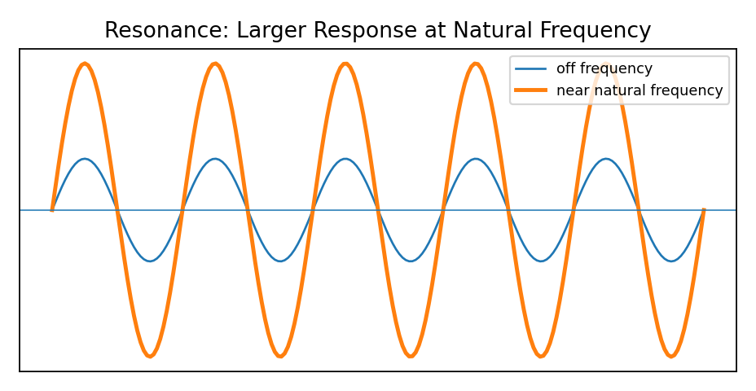
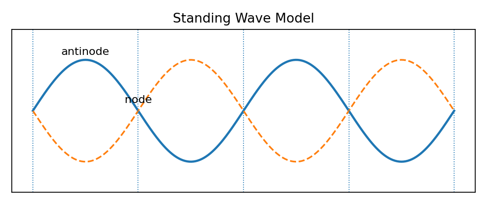

Design an investigation using pendulums to show resonance. Include what to change, what to measure, expected evidence, and one misconception addressed.
Design a tuning fork investigation to test resonance. Include materials, procedure, observations, and why matching natural frequency matters.

Analyze a string investigation that forms standing waves. Explain how changing tension or length could affect resonant frequencies.
Design an investigation using a tube and sound source to find resonance. Include the evidence that resonance has occurred.
A speaker drives a lightweight object at different frequencies. Explain how to identify the natural frequency and defend the conclusion with evidence.
A student changes frequency and amplitude at the same time, then claims resonance occurred. Critique the method and revise the investigation design.